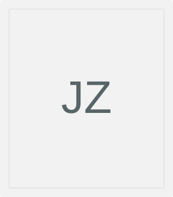

XR & wearable systems
End-to-end AR platforms, sensing and rendering pipelines, and optical system design.

Final-year CS undergraduate
University of Rochester · May 2027
I build wearable AR systems and work on human-centered AI at the University of Rochester.
With Prof. Yuhao Zhu in Horizon Lab, I lead an open wireless varifocal AR platform. In ROC-HCI, I work with Dr. Masum Hasan and Prof. Ehsan Hoque on conversational AI.
End-to-end AR platforms, sensing and rendering pipelines, and optical system design.
Human–AI interaction, conversational behavior, and interpretable language-model alignment.
Scene understanding, depth-aware image analysis, and perception in real-world systems.
Started as an Open Lab Support Teaching Assistant in the Computer Science department.
Presented End-to-End Wireless Varifocal AR Prototype at NY Architecture & Systems Day, Princeton University.
Received an Honorable Mention for the CRA Outstanding Undergraduate Researcher Award.
HAL: Inducing Human-likeness in LLMs with Alignment is available on arXiv.
A wearable research platform connecting sensing, server-side localization and rendering, and a varifocal display.
My role: Project lead and undergraduate research assistant, supervised by Prof. Yuhao Zhu.
I designed and prototyped the wearable hardware with Fusion 360 and 3D printing, integrating an IMU, outward-facing and eye-tracking cameras, a Linux client, and a varifocal display. I built the wireless client–server sensing/rendering pipeline and used Zemax simulations to study field of view, distortion, and third-order aberrations.
InnovateCS Research Grant, 2026 · Lightning talk and poster at NY Architecture & Systems Day, May 2026.
Language-model alignment for human-like virtual patient dialogue and medical communication training.
Mentors: Dr. Masum Hasan and Prof. Ehsan Hoque.
I prototyped DPO training components and supported data cleaning, synthetic dialogue generation, benchmarking, and debugging. I also built and debugged a lightweight agent framework linking API-based and local LLMs for batch generation and structured output parsing.
A depth-aware vegetation indexing pipeline for understanding trees, plants, and grass in complex urban scenes.
Mentor: Prof. Cantay Caliskan.
I designed an end-to-end vegetation indexing pipeline integrating Mask2Former segmentation, MiDaS depth estimation, and HSV-based refinement to classify urban vegetation.
Preprints & working papers
Aligning conversational behavior using a transparent reward built from interpretable traits. arXiv preprint.
@misc{hasan2026hal,
title = {HAL: Inducing Human-likeness in LLMs with Alignment},
author = {Hasan, Masum and Zhao, Junjie and Hoque, Ehsan},
year = {2026},
eprint = {2601.02813},
archivePrefix = {arXiv},
primaryClass = {cs.AI},
url = {https://arxiv.org/abs/2601.02813}
}Combining image segmentation and depth to measure street-level vegetation. SSRN working paper; authors listed alphabetically.
@misc{caliskan2025devise,
title = {DEVISE: Depth-Aware Vegetation Indexing System},
author = {Caliskan, Cantay and Chen, Zhizhuang and
Yang, Linglan and Zhang, Mingzhen and Zhao, Junjie},
year = {2025},
note = {SSRN Working Paper},
doi = {10.2139/ssrn.5371210},
url = {https://ssrn.com/abstract=5371210}
}Bachelor of Science in Computer Science
GPA: 3.99 / 4.00 · Rochester, New York
Open Lab Support TA · Fall 2026
CSC 252: Computer Organization TA · Spring 2026
CSC 242: Introduction to AI TA · Fall 2025
CSC 172: Data Structures & Algorithms · Workshop leader, lab and summer-session TA, Fall 2024 – Summer 2025
Artificial Intelligence Intern · Beijing, China
Deployed YOLOv5 on Jetson Nano and integrated camera perception with real-time smart-car control.
CS Undergraduate Council Tutor · Aug 2024 – May 2025. More details in my CV.
BEYOND THE SCREEN
Placeholder gallery — these credited reference images will be replaced with my own photographs.
Reference photography used under the Unsplash License. Sources & credits.
I’m preparing for MS and PhD applications and welcome conversations about XR systems, HCI, and human-centered AI. I’m also always happy to talk photography.
Department of Computer Science
University of Rochester · Rochester, NY